I had the opportunity to develop in depth an existing project idea over the course of a 10-week period. I decided to build a kinetic sculpture from scratch inspired by my appreciation for the beauty of all kinds of cloud-shape installations. They make me feel relaxed just by watching them. My favorite one among all is the “Point Cloud” by James Leng shown below.
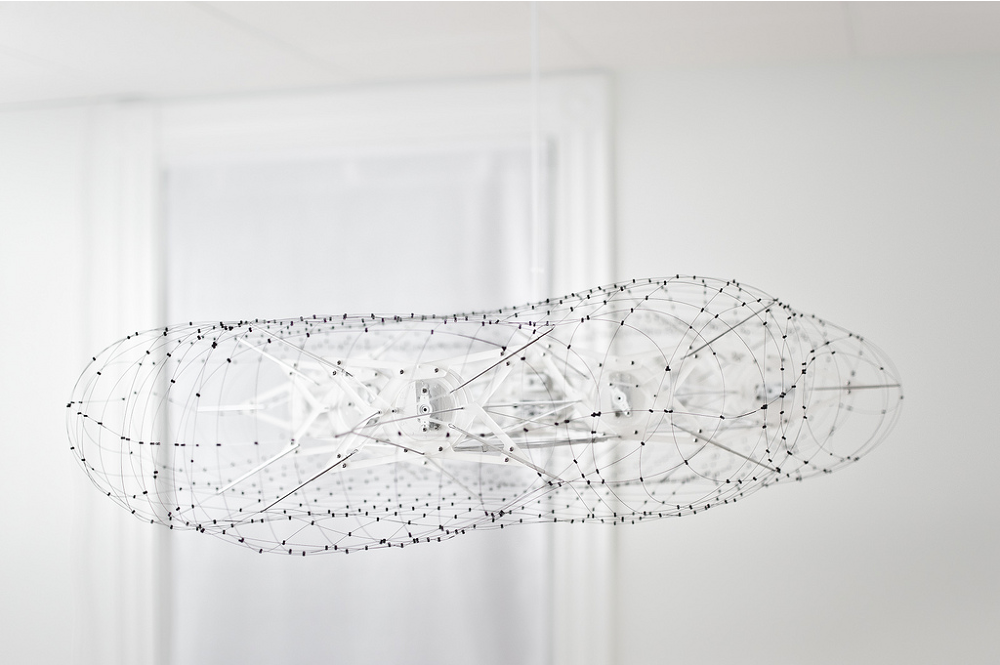Leng has a very clean structure and appealing outlook that are supported by both a complex mechanical movement design and the perfect blend of different materials, achieving an overall consistency of the aesthetic.
Being inspired by him, I proposed to design a minimalistic kinetic installation that showcases natural movement, like water ripples. I went through different stages in the production process to achieve the final satisfying outcome.
First, of course (might not need of course) was the rapid prototyping phase, where I tested my designs with materials that I had easy access to, in order to quickly test out the mechanical movement that came from my designs. I made 2 prototypes before I locked down the final version.
My first prototype, seen in Pic A, is a soft surface that connects to strings at the four corners, with motors placed on top of the surface. Through a bunch of invisible fishing lines, these motors drag the surface within the structure, from above.
This prototype did not work because I would need to add pivot points for the fishing lines on the soft surface, and this would make the entire movement look bad and unnatural, just like dragging different square spaces as shown in Pic B.
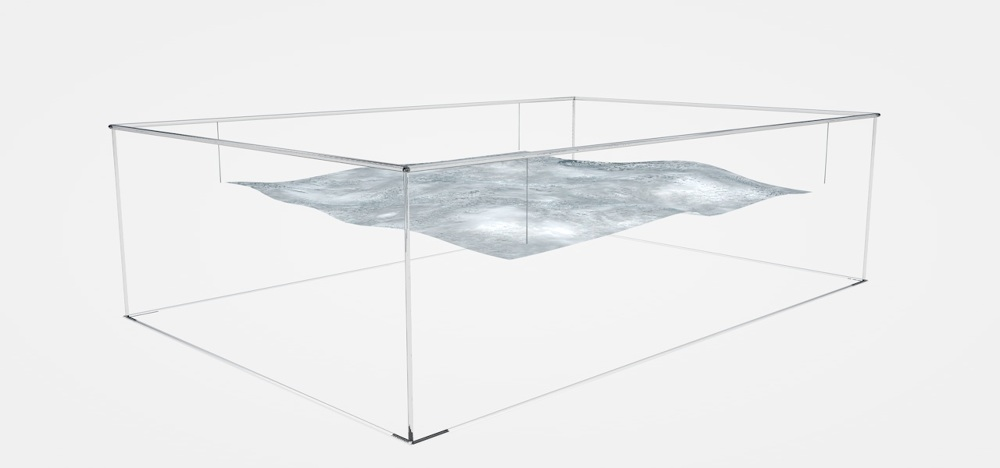Then I moved on to test out another structure that looks like the bone structure of a Chinese lantern. Two flat round pieces of wood are pieced together by 24 pieces of supporting structure.
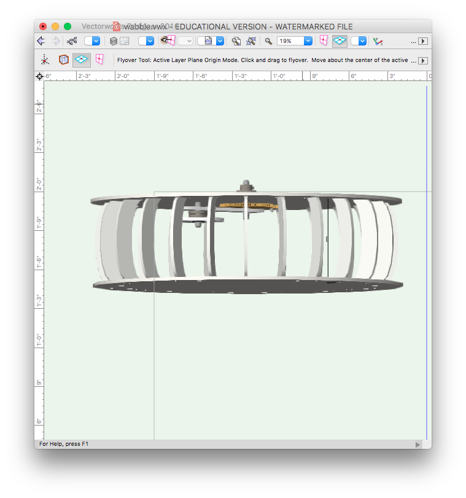One end of the strings are connected to a free rotating plate in between the sandwich:
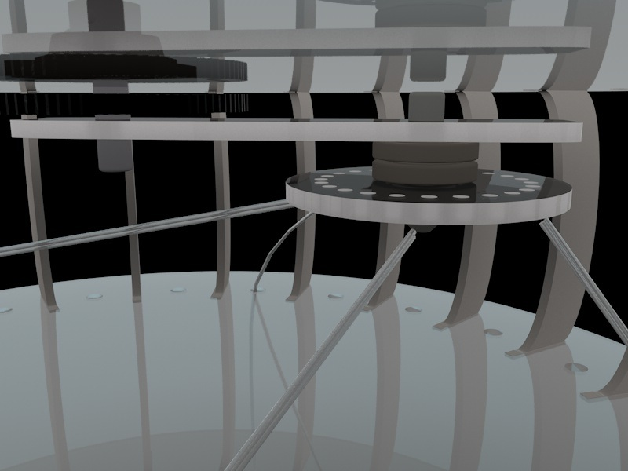Here is the other end of the strings coming out from the bottom, round piece that has 24 holes:
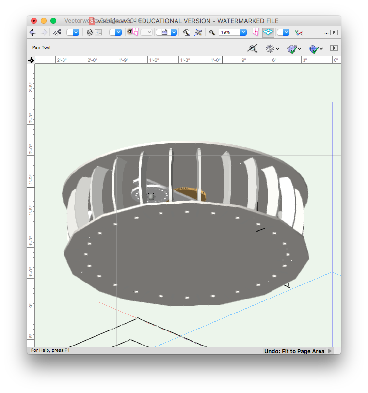Together it looks like this (I only had one ring in this design):
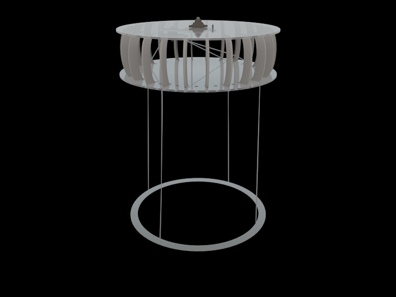The pieces were designed using Vectorworks and then cut out using the CNC:
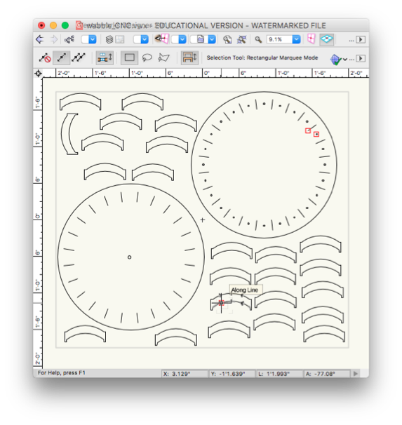 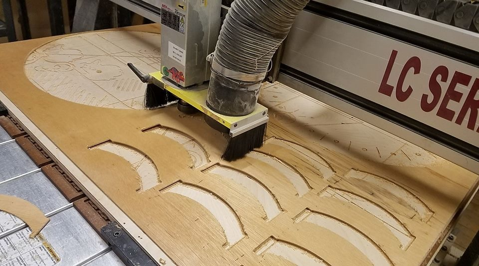The pieces were then assembled together.
I then moved onto the final design:
From what I learned from my previous prototypes, I decided on applying the lantern structure to my final model because it worked really well to fasten all different layers with only a few vertical bar connectors. It provides a light weight and secure frame, making the arm bearing rotation and the vertical movements of the strings possible, which eventually allowed the the wobble movement of the rings to come together to provide a natural sense of water movement.
Upper frame structure in details:
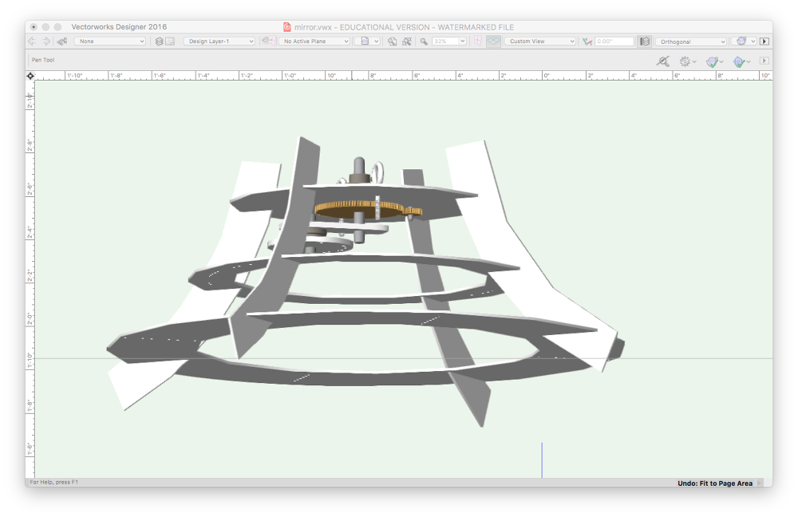The middle layer that is composed of 36 individual fishing strings, and the 9 concentric rings hanging below:
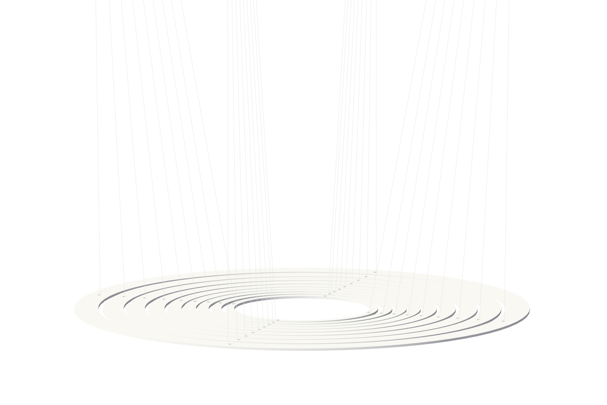The entier 3D model:
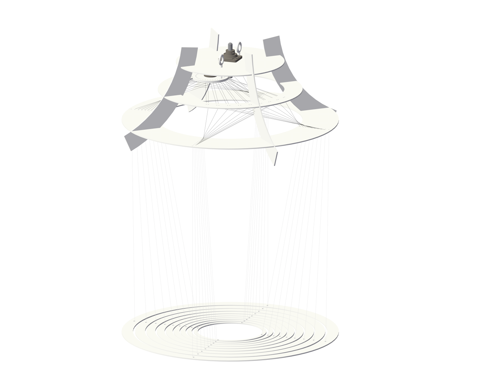I appreciate minimal style so much that I wanted my kinetic sculpture to be a subtle, yet eye catching element that blends in with the environment and adds seamlessly to the ambiance of the room.
I had initially decided to make the structure out of white or transparent acrylic, but because of the available fabrication facilities, I shifted to a 1/8" wood piece instead, which turned out to be minimal and organic looking as well.
Fishing lines are both structurally and functionally important because they connect all the rings to the rotating arms that provide the movement. However, they not only help at the practical level, they also make the sculpture best deliver the minimal aesthetic while the connections themselves are almost transparent, and visually interesting.
motor, rotation arm, plate and fishing line
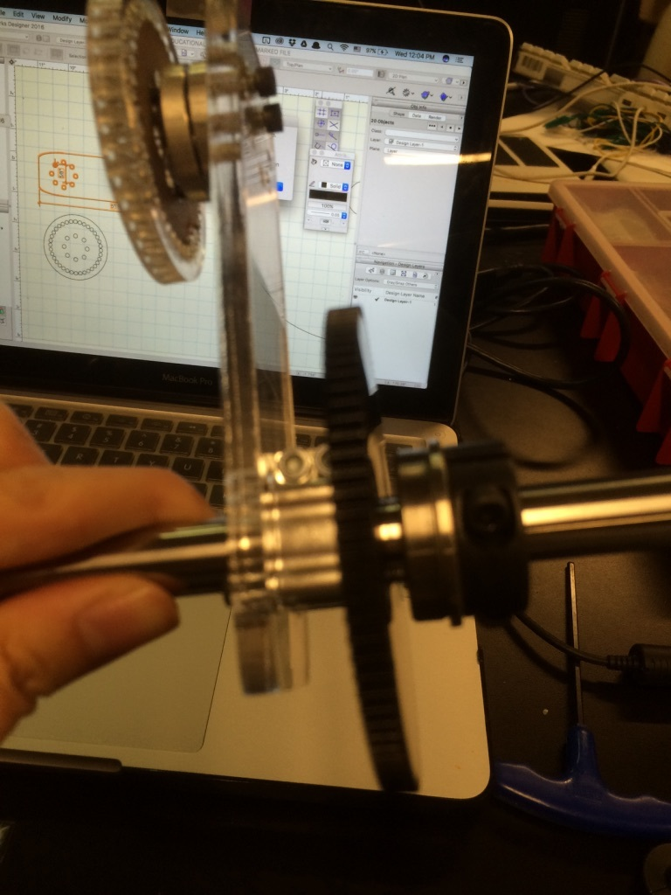 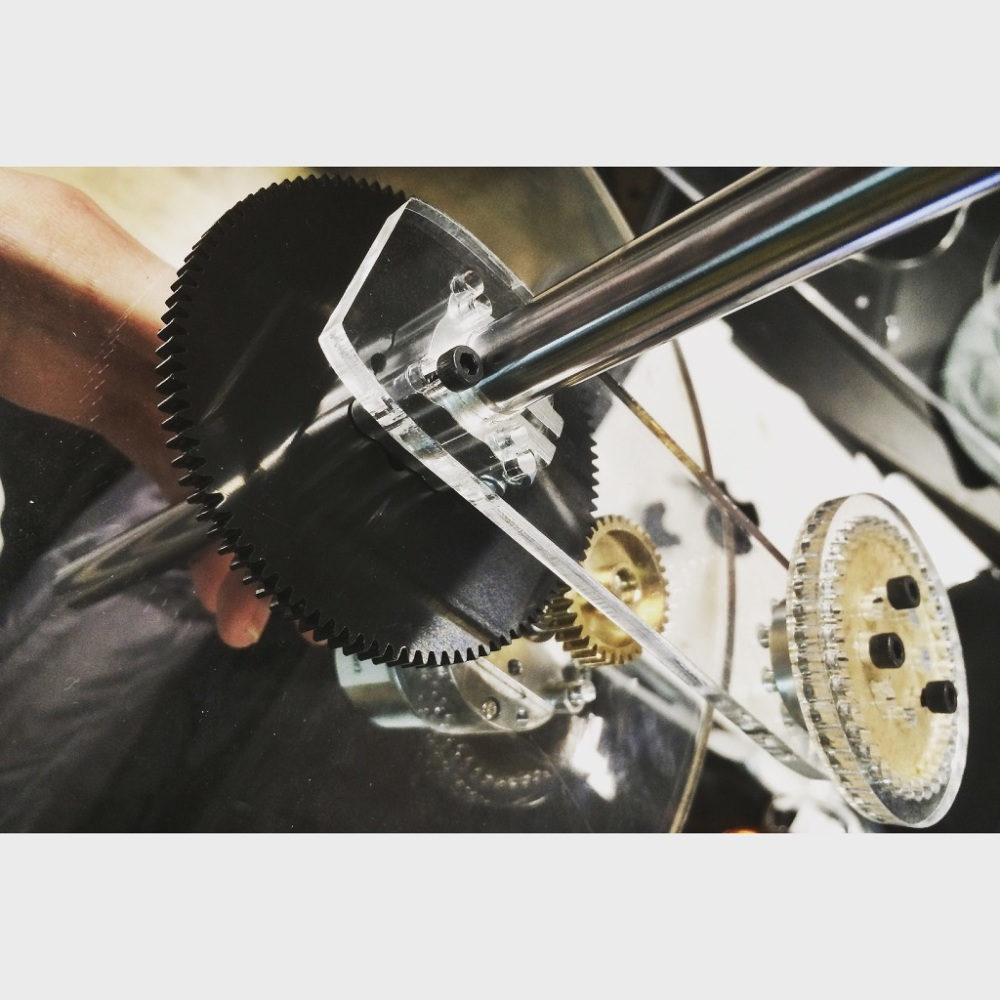List of Material:
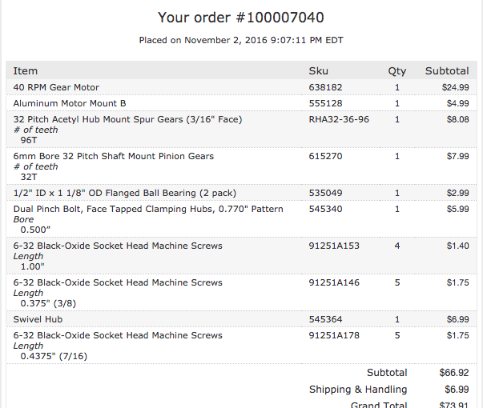The Final Sculpture:
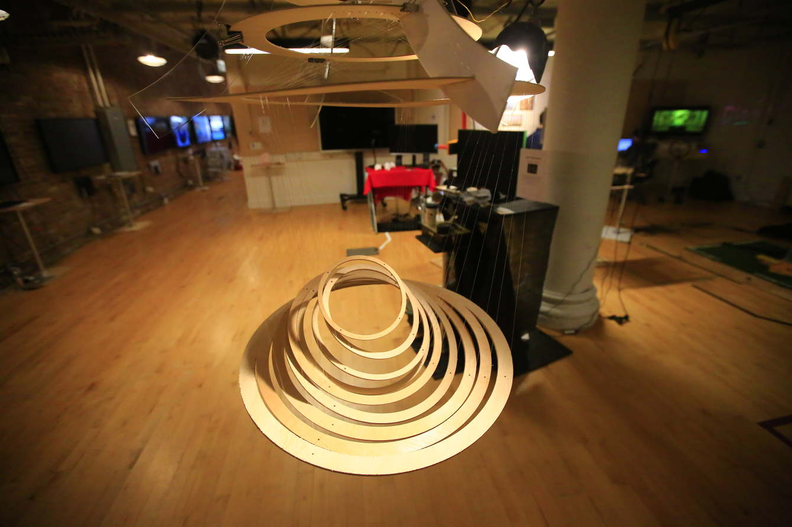The whole piece took approximately 10 weeks to build. It was a great opportunity for me to walk through the different stages of the production process all by myself, allowing me to be flexible on the schedule as I sometimes had to be, and most importantly I learned how to multitask.
Iteration is another skill I developed thoroughly from building this project. At the beginning, everything was difficult, even to design one simple file for the bar connector in the first prototype. I made a lot of mistakes in fabricating that piece. I underestimated the scale and details in the fastener slots, etc.. I learned that so many things have the potential to go wrong in the process. However, as the development advanced, I soon learned how to better prioritize planning out the work that would directly affect the later process, for example: avoiding cutting things that won’t fit.
Therefore, having gone through all the fundamental levels and critical check points in the production process, I am confident enough to say that I was capable of learning from my mistakes and was able to iterate on my designs multiple times and to different scales, to ensure the complete and successful delivery of this project.